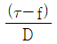
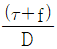
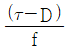
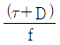
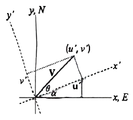
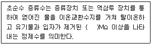
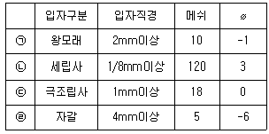
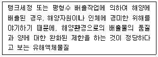

해양환경기사 (2021-05-15 기출문제)
1과목: 해양학개론
1. 한류에 속하는 해류는?
- 기니아 해류
- 멕시코 만류
- 오야시오 해류
- 쿠로시오 해류
(정답률: 70%)

2. 조석을 일으키는 주된 원인으로 가장 적합한 것은?
- 구심력의 차
- 해저지형의 차
- 달과 태양의 거리 차
- 천체인력의 지구표면 각점과 지구중심과의 차
(정답률: 71%)
3. 대기중에 용해되어 있는 화학 성분 중 온실효과로 인한 해수면의 상승과 가장 관련이 깊은 것은?
- N2
- O2
- Ar
- CO2
(정답률: 89%)
4. 주로 해산이나 기요의 경사면에서 화산암질 암반위를 피복하여 나타나는 자원은?
- 다금속펄
- 망간단괴
- 해저 열수광상
- 코발트-망간각
(정답률: 63%)
5. 입자의 크기 중에서 중사(medium sand)에 해당하는 것은?
- 0.25 ~ 0.5mm
- 0.5 ~ 2mm
- 2 ~ 4mm
- 4 ~ 64mm
(정답률: 52%)
6. 쇄설성 입자들의 날카로운 정도와 표면의 곡률을 나타내는 것은?
- 구형도
- 원마도
- 편장도
- 회전도
(정답률: 83%)
7. 마찰을 무시할 때 와도(vorticity)의 보존은 어떻게 표시되는가? (단, τ는 상대와도, f는 행성와도, D는 수심)




(정답률: 71%)
8. 사행경로(사류, meandering currents)에 작용하고 있는 힘으로 가장 적절한 것은?
- 관성력, 코리올리힘, 원심력
- 관성력, 코리올리힘, 바람의 응력
- 원심력, 코리올리힘, 바람의 응력
- 기압경도력, 코리올리힘, 바람의 응력
(정답률: 51%)
9. 해양의 유동속도 및 퇴적속도 등을 측정하는데 많이 이용되는 우주방사성핵종인 것은?
- 238U
- 226Ra
- 57Co
- 14C
(정답률: 67%)
10. 열점(Hot Spot)과 관계가 가장 깊은 것은?
- 솔로몬 제도
- 알류샨 열도
- 하와이 제도
- 파푸아뉴기니
(정답률: 82%)
11. 해수의 표층밀도(σt)는 대체로 22~27의 범위에 있다. 각 지열별 설명 중 옳은 것은?
- 적도부근에서 최솟값을 가진다.
- 아열대해역에서 최댓값을 가진다.
- 북쪽 고위도일수록 점차 감소한다.
- 적도에서 위도 50~60° 까지 점차로 감소한다.
(정답률: 69%)
12. 대양저의 열류량에 대한 일반적인 양상으로 틀린 것은?
- 해구에서는 낮은 열류량을 나타낸다.
- 대서양 중앙 해저산맥에서는 높은 열류량을 나타낸다.
- 동태평양 해팽(rise)에서는 낮은 열류량을 나타낸다.
- 해저산맥의 측면에 따라 열류량이 작은 지역이 띠를 이룬다.
(정답률: 70%)
13. 적색 점토(red clay)가 가장 풍부하게 분포된 곳은?
- 인도양
- 지중해
- 남대서양
- 북태평양
(정답률: 67%)
14. 파랑의 에너지는 파고(H)의 얼마에 비례하는가?
- H
- H1/2
- H-1/2
- H2
(정답률: 75%)
15. 수심 100m에 해당하는 역학적 심도는?
- 9.8 dyn.m
- 49 dyn.m
- 98 dyn.m
- 196 dyn.m
(정답률: 73%)
16. 내부파에 대한 설명 중 옳은 것은?
- 표면파와 같다.
- 파고가 1개 밖에 없다.
- 표면파보다 진폭이 훨씬 작다.
- 밀도차가 큰 경계면에서 발생한다.
(정답률: 70%)
17. 지구의 원심력과 태양, 달의 기조력에 관한 설명으로 옳은 것은?
- 달의 기조력은 태양의 기조력보다 작다.
- 지구, 달, 태양이 일직선상일 때 기조력이 가장 크다.
- 지구, 달, 태양이 일직선상일 때 원심력이 가장 크다.
- 지구를 중심으로 달과 태양이 직각일 때 기조력이 가장 크다.
(정답률: 70%)
18. 대륙붕단(shelf break)의 평균수심은?
- 50m
- 100 ~ 150m
- 500m
- 1500m
(정답률: 78%)
19. 열대 저기압의 명칭과 발생지역의 연결이 틀린 것은?
- 태풍(Typhoon) - 북태평양
- 사이클론(Cyclone) - 북인도양
- 허리케인(Hurricane) - 북대서양
- 윌리윌리(Willy-Willies) – 지중해
(정답률: 77%)
20. 다음 해수의 주성분(major element) 중 가장 높은 농도를 나타내는 염류는?
- Ca2+
- K+
- SO42-
- HCO3-
(정답률: 69%)
2과목: 해양생태학
21. 다음 중 유생기간이 가장 긴 종류는?
- Ophiopluteus
- Veliger
- Megalopa
- Pyllosoma
(정답률: 62%)
22. 암반 조간대와 생물이 건조에 견디는 방법으로 가장 거리가 먼 것은?
- 뚜껑을 닫는다.
- 바위에 밀착한다.
- 점액질을 분비한다.
- 밝은 색의 패각을 갖는다.
(정답률: 72%)
23. 다음 중 심해 저서동물의 분포에 가장 큰 영향을 미치는 요인은?
- 온도
- 염분도
- 저질의 종류
- pH
(정답률: 70%)
24. 적조현상에 관한 내용의 연결이 옳지 않은 것은?
- 다량의 인과 질소 - 부영양화
- 적조 현상 – 플랑크톤 대량번식
- 적조 생물 폐사 – 용존 산소 증가
- 부패성 유기물 – 용존 산소 감소
(정답률: 79%)
25. 암반 조간대에 서식하는 무척추동물이 열저해에 견디는 방법과 그 대표적인 생물 간의 연결이 옳은 것은?
- 매끈한 체표면을 가짐 - 총알고동
- 표면적을 최소화 - 삿갓조개
- 그늘진 곳으로 이동 - 갯강구
- 밝은 패각을 가짐 – 고등류(Nodittorina)
(정답률: 74%)
26. 해양에서 광선과 해양 생물과의 관계에 대한 설명 중 틀린 것은?
- 적색광선이 풍부한 곳에서는 흔히 녹조식물이 우세하게 분포한다.
- 청색광선이 상대적으로 풍부한 곳에서는 홍조식물이 우세하게 분포한다.
- 꽁치, 정어리, 고등어는 양주광성 어류이다.
- 어두운 곳에 사는 심해어류는 입이 작고 무리를 짓고 다닌다.
(정답률: 73%)
27. 생물농축(bioaccumulation)에 의한 피해가 가장 큰 오염원은?
- 중금속 오염
- 유류오염
- 부영양화
- 생물독소
(정답률: 78%)
28. 해양 포유류의 수중생활 적응과 관련된 설명 중 옳지 않은 것은?
- 열손실을 최소화시키기 위해 생물의 크기가 크다.
- 열손실을 줄이기 위해 열전도율이 낮은 지방을 피하에 축적시킨다.
- 바다새와 같이 삼투적응에 필요한 염분비선을 갖고 있다.
- 혈액의 양이 많고, 혈액의 산소 저장능력도 크다.
(정답률: 72%)
29. 우리나라에서 평균 해수면을 중심으로 대수리, 지층이, 굴, 담치류 등이 우점종으로 나타나는 구역은? (단, 암반이 있는 저서생태계에서의 예이다.)
- 상부 조간대
- 중부 조간대
- 조하대 연변부
- 조상대 연변부
(정답률: 65%)
30. 해산 유영동물의 범주에 속하는 종류로만 나열된 것은?
- 펭귄, 청어, 오징어
- 물개, 바다뱀, 잉어
- 붕장어, 붕어, 먹장어
- 드렁허리, 베도라치, 개복치
(정답률: 71%)
31. 해양 포유동물이 오랫동안 잠수해 있기 위한 산소 공급 기작의 설명으로 틀린 것은?
- 많은 해양 포유동물은 육상동물보다 더 높은 혈액체적을 보유한다.
- 해양 포유동물은 단위 혈액 체적 당 더 높은 산소량을 보유한다.
- 해양 포유동물의 잠수기간 동안 순환계는 여러 기관으로의 혈액공급을 차단한다.
- 해양 포유동물은 잠수기간 동안 심장박동을 늘인다.
(정답률: 74%)
32. 하구역의 주요 1차 소비자가 아닌 것은?
- 미소 갑각류인 육질꼬리옆새우류(Corophium spp.)
- 강어귀참갯지렁이류(Hediste spp.)
- 바지락이나 굴과 같은 이매패류
- 하구를 찾아오는 철새들
(정답률: 77%)
33. 해양생물이 patchy 분포를 가질 때 표본의 평균과 분산 관계에 대한 설명으로 옳은 것은? (단, 표본의 분포는 poisson 분포를 기준함)
- 표본의 평균치가 분산과 같을 때
- 표본의 평균치가 편차보다 적을 때
- 표본의 평균치가 분산보다 클 때
- 표본의 평균치가 분산보다 적을 때
(정답률: 54%)
34. 대양의 심층부에 언제나 생물의 생존에 충분한 산소가 용존(흑해 제외)되어 있는 주된 이유는?
- 생물군의 밀도가 적어 산소의 소모가 적기 때문이다.
- 심해일지라도 해류의 수직이동에 의해 충분한 산소가 공급되고 있기 때문이다.
- 심해는 항상 온도가 낮으므로 산소 수중용해도가 높기 때문이다.
- 한 대지방에서 침전된 산소의 함량이 높은 해류가 전대양의 심층부로 흐르고 있기 때문이다.
(정답률: 66%)
35. 해양 저서생물의 유생생태에 대한 설명이 옳은 것은?
- 대부분의 유생은 성체와 매우 유사한 형태적 특징을 가지므로 식별이 비교적 쉽다.
- 부유유생 시기의 생존과 저서생활로의 정착의 성패 여부는 이들 저서생물에게는 분포해역의 확대 및 지역 집단의 유지, 집단 간의 유전자 교류 등에 중요한 의의를 가진다.
- 저서생물의 개체군의 변동은 부유유생 시기의 초기감모(early reduction) 보다는 가입 후 성장을 거치면서 산란 직전에 일어나는 경우가 많다.
- 저서생물은 저생기(底生期)의 유치체(幼稚體, benthic juvenile)로 직접 발생하는 것이 특징이다.
(정답률: 73%)
36. 해양의 미세화석(Microfossil)을 이루는 무리가 아닌 것은?
- 유공충
- 다모류
- 방산충
- 규조류
(정답률: 69%)
37. 육상생태계에 비해 해양에 서식하는 생물의 특성과 거리가 먼 것은?
- 크기가 작고 생활사가 짧다.
- 1차 소비자인 동물의 크기가 작다.
- 먹이사슬의 길이가 짧다.
- 생물의 분포가 물의 움직임과 관련된다.
(정답률: 73%)
38. 전 세계적으로 일반적인 천해 생태계에서의 중형저서생물의 평균 시석밀도와 현존량을 Mclntyre(1969)나 Coull and Bell(1979)의 연구 결과에 의해 구할 때 옳은 것은?
- 106개체 정도/m2, 1 ~ 5 g/m2
- 103개체 정도/m2, 10 ~ 100 g/m2
- 106개체 정도/m2, 10 ~ 100 g/m2
- 103개체 정도/m2, 1 ~ 10 g/m2
(정답률: 54%)
39. 폐쇄적인 만에서 양식생물의 배설물 등이 저층에 쌓여 나타나는 주된 현상은?
- 생산량 증가
- 영양염 공급으로 인한 생물량 증가
- 종 다양도 증가
- 유기물 분해로 인한 빈산소대 증가
(정답률: 77%)
40. 해양수역의 바닥에 서식하는 식물이나 동물의 성장이나 행동에 가장 많은 영향을 주는 광선은?
- 청색광
- 적색광
- 등색광
- 황색광
(정답률: 75%)
3과목: 해양계측학
41. 대기의 창에 해당되는 파장은?
- 10 μm
- 10 mm
- 10 cm
- 10 m
(정답률: 74%)
42. 여름철 우리나라 남동해 연안에 나타나는 이상저온 현상을 설명할 수 있는 현상은?
- 이안류(Rip cyrrent)
- 이상파랑(Freak wave)
- 에크만 수송(Ekman transport)
- 스베드럽 수송(Sverdrup trasport)
(정답률: 69%)
43. 반일주조가 우세한 우리나라 서해안에서 해면의 승강은 1일 2회 일어난다. 이때 고조에서 고조까지의 평균시간은?
- 약 12시간
- 약 12시간 25분
- 약 12시간 50분
- 약 25시간
(정답률: 72%)
44. NOAA 위성의 적외선 자료로 난류(turbulence)의 유축변동(流軸變動)을 조사하려 할 경우 연구대상 인자는?
- 염분
- 수압
- 수온
- 파고
(정답률: 72%)
45. 1 mbar 의 대기압이 유발하는 해수면 높이로 옳은 것은?
- 0.1 cm
- 1 cm
- 10 cm
- 100 cm
(정답률: 60%)
46. 조석관측 방법으로 이용되지 않는 것은?
- 부표식
- 레이저식
- 지자기식
- 극초단파식
(정답률: 68%)
47. 해안부근에서 창조류(flood current)는 어느 때 나타나는가?
- 저조시
- 고조시
- 저조에서 고조사이
- 고조에서 저조사이
(정답률: 68%)
48. 해양퇴적물 부피측정기에 사용되는 입자크기가 아주 작은 특징을 가지는 가스(gas)는?
- 산소(O)
- 질소(N)
- 헬륨(He)
- 이산화탄소(CO2)
(정답률: 72%)
49. 피스톤 시추기에 대한 설명으로 옳지 않은 것은?
- 모래 퇴적물보다는 니질 퇴적물일 경우 회수율이 높다.
- 수심이 깊어도 교란되지 않고 비교적 긴 코어시료를 채취할 수 있다.
- 피스톤 시추기는 중력 시추기에 비해 더 길고 덜 교란된 수직시료를 채취할 수 있다.
- 니질이 우세한 상부층(수십 cm)을 교란 없이 채취할 수 있어 최상부층 시료 획득에 주로 사용된다.
(정답률: 63%)
50. 해양 퇴적물의 비배수전단응력(undrained shear strength)에 대한 설명으로 옳은 것은?
- 전단력(shear strength)에 대한 퇴적물의 탄성력을 비로 나타낸 값이다.
- 휴대용 측정기인 hand vane은 일정한 강도와 속도를 지속적으로 유지시킬 수 있으므로 오차가 적다.
- 자동응력측정장비(motorized shear vane)은 퇴적물 특성에 따라 크기와 부품을 교환하지 않아도 된다.
- 퇴적물이 100% 포화되어 있고 균질하며 서립질(주로 점토) 퇴적물로서 비배수 상태에서 측정하여야 한다.
(정답률: 53%)
51. 유속계는 자북을 기준으로 하여 유향과 유속을 측정하므로 추후에 진북을 기준으로 하는 유속 성분을 구해야 한다. 그림에서 자북(y′)과 진북(y)의 각도를 α라 할 때, 유속계의 측정값(u′, v′)로부터 진북 기준 좌표계의 유속(u, v)를 구하는 식은?

- u = u′cosα + v′sinα, v = u′sinα - v′cosα
- u = u′cosα - v′sinα, v = u′sinα + v′cosα
- u = u′sinα + v′cosα, v = u′cosα - v′sinα
- u = u′sinα - v′cosα, v = u′cosα + v′sinα
(정답률: 59%)
52. 망간단괴 등 큰 덩어리의 채취에 가장 적합한 것은?
- Grab
- Corer
- Dredge
- Snapper
(정답률: 66%)
53. 해수 표면의 수온 분포 측정에 가장 많이 사용되는 전자파는?
- X선
- 자외선
- 적외선
- 가시광선
(정답률: 72%)
54. 남극순환류(ACC)를 가로질러 유속을 관측한 결과 전 수층에 걸쳐 순압류의 특성을 보였고, 수송량이 150 Sv이라고 할 때 관측라인을 통과한 ACC의 평균유속은? (단, 관측한 ACC의 폭은 100km, 수심은 3kn 로 일정하다.)
- 0.25 m/s
- 0.5 m/s
- 0.75 m/s
- 1.0 m/s
(정답률: 52%)
55. LANDSAT 1~5호기에서 사용되는 탐사장비로 가시광선 및 근 적외선 영역의 전자에너지를 4~5개 채널로 구분하여 감지하는 장비는?
- ALT
- MSS
- SASS
- AVHRR
(정답률: 57%)
56. 수온-염분 도표(T-S diagram)로부터 알 수 없는 것은?
- 수직 안정도
- 수괴의 혼합
- 심층해수 순환
- 대기나 해저에 의한 수괴의 변질
(정답률: 70%)
57. 심해의 파랑(너울)이 해안에 가까워지면서 일어나는 현상은?
- 파장은 짧아지고 파고는 높아진다.
- 파장은 짧아지고 파고는 낮아진다.
- 파장은 길어지고 파고는 높아진다.
- 파장은 길어지고 파고는 낮아진다.
(정답률: 70%)
58. 해상에서 배의 위치를 정확히 알고자 할 때 널리 사용되는 위성항법의 원리는?
- Wien Law
- 천문항법 원리
- Doppler효과 원리
- Stefan-Boltzmann Law
(정답률: 69%)
59. 퇴적물 식별에 이용되는 음파탐사법 중 해저 아래 수백 m 까지를 탐사하는데 적용되는 주파수는?
- 수십 Hz
- 수백 Hz
- 1 kHz 전후
- 5 kHz 전후
(정답률: 61%)
60. 2013년 1월 1일 ~ 1월 30일 간 관측된 지세포의 평균해면이 82.5cm, 인근 표준항인 부산의 평균해면이 62.0cm 이고, 부산의 연평균해면이 64.0cm 일 경우 지세포의 보정된 연평균해면은?
- 80.5cm
- 81.5cm
- 83.5cm
- 84.5cm
(정답률: 58%)
4과목: 해수의 수질분석
61. 어떤 화학종의 농도를 분석하였는데, 정밀도(precision)는 매우 좋은 반면에 정확도(accuracy)는 나쁜 결과를 얻었다. 원인에 대한 설명이 가장 적절한 것은?
- 구조적인 오차(systematic error)는 작으나, 무작위적 오차(random error)는 크다.
- 구조적인 오차(systematic error)는 크고, 무작위적 오차(random error)도 크다.
- 구조적인 오차(systematic error)는 크나, 무작위적 오차(random error)는 작다.
- 구조적인 오차(systematic error)는 작고, 무작위적 오차(random error)도 작다.
(정답률: 56%)
62. 해양환경공정시험기준상 대장균군 측정에 관한 사항 중 틀린 것은?
- 대장균군 실험 결과는 MPN/1000 mL 단위로 표시한다.
- 시험 중 다른 미생물의 오염 위험을 막기 위하여 모든 시험은 원칙적으로 무균조작을 하여야 한다.
- 시료채취는 무균적으로 하고 멸균된 용기에 넣어 1시간 내로 실험실에 운반하여 실험해야 한다.
- 대장균이라 함은 그람음성, 무아포성의 간균으로서 유당을 분해하여 가스 또는 산을 발생하는 모든 호기성 또는 통성혐기성균을 말한다.
(정답률: 50%)
63. 0.1N 염산용액 10ml를 중화하는데 KOH용액 200ml가 소비되었다면 KOH용액의 pH는?
- 11.0
- 11.5
- 11.7
- 12.0
(정답률: 50%)
64. ICP-MS에 의한 측정에 적합하지 않은 성분은?
- Pb
- Cu
- Ar
- Zn
(정답률: 62%)
65. 질소계 화합물 중 열역학적으로 비교적 안정되어 있기 때문에 일반화학적 발색반응방법은 적용하기가 어렵거나 방법상의 간섭효과가 심하여 정확도와 정밀도가 매우 열악하므로 카드뮴 환원관을 이용하여 측정하는 항목은?
- 총 질소
- 질산성 질소
- 아질산 질소
- 암모니아 질소
(정답률: 57%)
66. 해양생물의 생체 내 중금속류를 측정할 때 분석오차를 줄이기 위해 생물시료를 탈장시켜야 한다. 이 때 일반적인 탈장시간으로 가장 적절한 것은?
- 6시간
- 12시간
- 24시간
- 48시간
(정답률: 67%)
67. 다음 ( ) 안에 알맞은 값은?

- 12.5
- 15.2
- 18.2
- 21.2
(정답률: 60%)
68. 입도분석 시 입자크기를 측정하는 원리는 입자의 크기에 따라 다르며 입자의 크기는 자갈과 모래 그리고 펄로 크게 나눌 수 있다. 다음 중 입도 등급위 구분이 틀린 것은?

- ㉠
- ㉡
- ㉢
- ㉣
(정답률: 60%)
69. 해양환경공정시험기준상 해수 중 유기주석화합물(TBT) 분석에 대한 설명으로 틀린 것은?
- 기체크로마토그래피로 분리하여 전자포획검출기(ECD)로 분석한다.
- 미리 세척한 1L 시료용기에 해수시료를 채수한 후 염산을 첨가하여 pH를 2 이하로 만들어 실험실로 옮기며, 즉시 분석이 수행되지 않을 때는 4℃ 이하에서 보관한다.
- 기체크로마토그래프-불꽃 광도 검출기를 이용한 기기검출한계는 95% 신뢰구간에서 10ng/L 미만이다.
- 유기주석화합물은 광분해 및 생분해될 우려가 있으므로 차광용기를 사용하여 빠른 시간 안에 분석한다.
(정답률: 42%)
70. 해수의 용존산소 측정법 중 윙클러아지드화나트륨적정법에 사용되는 시약과 관계가 없는 것은?
- 염화망간용액
- 아황산나트륨용액
- 티오황산나트륨용액
- 알칼리요오드화나트륨용액
(정답률: 44%)
71. 해양환경공정시험기준상 분광광도계에 의한 클로로필-a의 측정에 사용되는 기구가 아닌 것은?
- 건조기
- 교반기
- 여과기
- 원심분리기
(정답률: 60%)
72. 해수의 인산염인을 분석하기 위한 방법은?
- 디아조화법
- 이온전극법
- 에브럴-노리스법
- 아스코르빈산 환원법
(정답률: 51%)
73. 해양환경공정시험기준상 기체크로마토그래피법으로 알킬수은 정량에 관한 설명으로 틀린 것은?
- 운반기체 : 헬륨
- 검출기 온도 : 250~300℃
- 유효 측정범위 : 0.5 μg Hg/L 이상
- 검출기 : 전자포획 검출기(ECD)
(정답률: 51%)
74. 해양환경공정시험기준상 해양 유출유 분석 실험에 관련된 설명이 아닌 것은?
- 노르말헥산으로 추출하여 농축한 후 실리카겔 컬럼을 통과시켜 분석방해물질을 제거하고 기체크로마토그래프로 분리하여 전자 포획 검출기로 분석한다.
- 황합물을 불꽃광도 검출기(flamephotomeric detector)가 부착된 기체크로마토그래피법 따라 황화합물이 연소할 때 발생하는 빛의 스펙트럼 중 파장 394nm에서 측정되는 크로마토그래프의 패턴으로 비교 확인한다.
- 시료 중에 함유되어 있는 다환방향족 탄화수소류가 나타내는 형광을 홍분파장 254nm에서 형광파장 280~500m 까지의 형광스펙트럼을 측정하여 세기와 패턴을 비교하여 확인한다.
- 시료를 적외선 셀에 넣고 분광광도계에 의해 4000~6000cm-1의 범위에서 적외선 스펙트럼을 측정한 다음 미확인 유류시료의 비교대상 유류의 적외선 스펙트럼을 상호 비교하여 스펙트럼의 일치정도를 식별한다.
(정답률: 43%)
75. 해수의 대장균군 시험방법이 아닌 것은?
- MPN법
- AGP 시험법
- 막여과에 의한 시험법
- 발색제에 의한 시험법
(정답률: 55%)
76. 해양환경공정시험기준상 표층퇴적물 시료 채취 과정에 관한 설명으로 틀린 것은?
- 시료 채취 시 채취기의 금속재질과 접촉한 부분의 시료를 채취하지 않도록 주의한다.
- 표층퇴적물은 입구가 넓은 고밀도폴리에틸렌병(wide mouth HDPE bottle)에 담는다.
- 플라스틱 재질의 주걱으로 교란되지 않은 부분의 표층에서 20cm 깊이까지를 표층퇴적물로 취한다.
- 그랩형 시료채취기로서는 반빈 채취기(Van Veen grab sampler), 스미스-맥킨타이어 채취기(Smith-McIntyre grab sampler), 라퐁드 채취기(la Fond grab) 혹은 이들과 유사한 규격의 채취기를 이용한다.
(정답률: 54%)
77. 투명도 측정과 관련한 사항 중 틀린 것은?
- 비가 오거나 파도가 심할 때는 정확한 투명도를 얻을 수 없으므로 측정하지 않는다.
- 추가 달린 30cm 백색 원판을 해수 표층에서 수직으로 하강시켜 원판이 보이지 않는 수심을 2회 측정하여 평균값을 낸다.
- 투명도는 조사선박이 완전히 정선하였을 때 측정하며, 만일 해류 때문에 부득이 줄이 기울어질 경우 각도를 측정해 투명도 수심을 보정해야 한다.
- 날씨가 맑고 온화할 때 직사광을 피하여 선박의 그늘진 곳에서 측정하되 투명도가 높아 투명도판이 바닥에 닿을 때는 현장수심에 밑줄을 쳐서 표시한다.
(정답률: 54%)
78. 해양환경공정시험기준상 해수 중 Pb 성분의 추출과정에 관한 설명으로 옳은 것은?
- 여과 후 NH3로 추출한다.
- 여과 후 CH2Cl2로 추출한다.
- 유기착화제로 착화합물을 만들어 0.2N 질산용액으로 추출한다.
- 유기착화제로 pH 4~5에서 비극성 유기금속착화합물을 형성시킨 후 유기용매로 추출한다.
(정답률: 32%)
79. 해수 시료 전처리 시 증류를 하지 않는 분석항목은?
- 구리
- 페놀
- 불소
- 시안
(정답률: 44%)
80. Winkler 으로 용존산소를 고정시키기 위하여 쓰이는 시약은?
- KIO3
- MnCl2
- KMnO2
- Na2S2O3
(정답률: 50%)
5과목: 해양관련법규
81. 해양환경관리법상 해양오염방지설비에 대한 검사 종류가 아닌 것은?
- 수시검사
- 정기검사
- 중간검사
- 임시항해검사
(정답률: 50%)
82. 해양오염방지협약(MARPOL 73/78)상 다음 유해액체물질의 분류는?

- X류
- Y류
- Z류
- 기타 물질
(정답률: 54%)
83. 유류오염손해배상보장법상 둘 이상의 유조선이 관련된 사고로 발생한 유류오염손해가 어느 유조선으로부터 유출 또는 배출된 유류에 의한 것인지 분명하지 아니한 경우 각 유조선의 선박소유자의 손해배상책임 문제는 어떻게 되는가?
- 각 선박소유자는 개별책임을 진다.
- 각 선박소유자는 연대책임을 진다.
- 사고유발선박의 소유자만이 책임진다.
- 항행상 의무선의 소유자만이 책임진다.
(정답률: 63%)
84. 해양환경관리법령상 해양경찰청장 소속 해양환경감시원의 직무가 아닌 것은?
- 해양공간으로 유입되거나 해양에 배출되는 폐기물을 감시
- 해양오염방제업자 및 유창청소업자가 운영하는 시설에 대한 검사·지도
- 해양시설에서의 방제선등의 배치·설치 및 자재·약제의 비치 상황에 관한 검사
- 오염물질의 배출 또는 배출혐의가 있다고 인정된 경우 조사활동 및 감식·분석을 위한 오염시료 채취 등
(정답률: 37%)
85. 해양환경관리법상 해역이용사업자등 또는 처분기관은 해양수산부장관으로부터 통보받은 의견에 대하여 이의가 있는 때에는 며칠 이내에 해양수산부장관에게 이의신청을 할 수 있는가?
- 7일 이내
- 30일 이내
- 90일 이내
- 1년 이내
(정답률: 62%)
86. 해양환경관리법상 오염물질 총량규제 항목이 아닌 것은?
- 질소
- 중금속
- 부유물질
- 화학적 산소요구량
(정답률: 47%)
87. 해양오염방지협약(MARPOL 73/78)상 항행중인 유조선이 바다에 기름을 배출할 수 있는 조건으로 틀린 것은?
- 특별해역 내에 있지 않을 것
- 가장 가까운 육지로부터 50해리 밖에 있을 것
- 유분의 순간배출율이 1해리 당 100ℓ 이하일 것
- 기름배출감시제어장치 및 슬롭탱크장치를 작동시키고 있을 것
(정답률: 50%)
88. OPRC 협약 발효에 관한 사항으로 틀린 것은?
- 협약 국제 발효일은 1995년 5월 13일
- 15개국 이상이 비준한 날로부터 12개월 후 발효
- 협약 발효일 이후 가입한 국가의 경우 가입 6개월 후 효력 발생
- 당사국은 협약 발효일부터 5년이 경과한 후 언제든지 탈퇴 가능
(정답률: 49%)
89. 해양환경관리법의 적용범위에 해당하지 않는 것은?
- 방사성 물질에 의한 해양오염
- 대한민국 영토에 접속되는 해역 안에서 행하여진 해양오염
- 선박법 규정에 의한 대한민국 선박에 의하여 행하여진 해양오염
- 해저광물자원 개발법 규정에 따라 지정된 해저광구의 개발과 관련하여 발생한 해양오염
(정답률: 59%)
90. 해양환경관리법상 해양오염방지선박검사, 예비검사 및 에너지효율검사를 받은 자가 검사결과에 불복이 있을 경우 그 결과의 통지를 받은 날로부터 얼마 이내에 재검사를 신청할 수 있는가?
- 30일 이내
- 60일 이내
- 90일 이내
- 100일 이내
(정답률: 49%)
91. 해양환경관리법령상 유조선의 화물창과 선박의 연료유 탱크에는 선박평형수의 적재를 원칙적으로 금지함에도 불구하고 특별히 적재가 허용되는 경우는?
- 기관실 폐유를 배출할 경우
- 항내에 입항하기 위한 경우
- 전쟁해역을 통과하기 위한 경우
- 새로이 건조한 선박을 시운전하거나 선박의 안전을 확보하기 위하여 필요한 경우
(정답률: 65%)
92. 유류오염손해배상보장법상 선박소유자의 책임제한권이 상실되는 경우는?
- 선원의 과실
- 도선사의 과실
- 항해용선자의 고의
- 선박소유자의 고의
(정답률: 55%)
93. 유류오염손해배상보장법상 선박소유자는 채권자로부터 책임한도액을 초과하는 청구금액을 명시한 서면청구일로부터 몇 개월 이내에 책임제한절차 개시 신청을 해야 하는가?
- 1개월
- 2개월
- 3개월
- 6개월
(정답률: 39%)
94. 해양오염방지협약(MARPOL 73/78) 부속서 Ⅰ에서 규정하고 있는 특별해역에 속하지 않는 해역은?
- 홍해
- 베링해
- 아덴만
- 지중해
(정답률: 59%)
95. 해양오염방지협약(MARPOL 73/78)상 국제유류오염방지증서(International Oil Pollution Prevention Certificate)를 교부 받아야 할 유조선(oil-tanker)의 기준으로 맞는 것은?
- 총톤수 50톤 이상
- 총톤수 100톤 이상
- 총톤수 150톤 이상
- 총톤수 200톤 이상
(정답률: 57%)
96. 유류오염손해배상보장법의 입법목적과 관계가 없는 사항은?
- 국가의 배상책임
- 유류오염손해의 배상
- 선박소유자의 책임한계
- 선박으로부터 유출된 기름
(정답률: 50%)
97. 해양생태계의 보전 및 관리에 관한 법령상 해양보호구역에서의 행위 제한에 해당하지 않는 것은?
- 공유수면 또는 토지의 형질변경 행위
- 공유수면에서의 바다모래·규사 및 토석의 채취 행위
- 공유수면의 구조를 변경하거나 해수의 수위 또는 수량에 증감을 가져오게 하는 행위
- 해양보호구역의 해양생태계에 대한 정기적인 현황조사를 수행하는 데에 필요한 관측시실 등의 설치 행위
(정답률: 62%)
98. 유류오염손해배상보장법상 유류오염사고로 인해 손해를 본 피해자가 선박소유자 또는 보험자로부터 배상받지 못한 유류오염손해금액에 대해 보상을 청구할 수 있는 곳은?
- 선적국
- 국제기금
- 선박소유자의 국가
- 보장계약증명서교부국
(정답률: 55%)
99. 해양환경관리법상 해양오염방지검사증서 및 협약검사증서의 유효기간은? (단, 방오시스템검사증서, 에너지효율검사증서는 제외한다.)
- 2년
- 3년
- 5년
- 7년
(정답률: 62%)
100. 해양환경관리법상 선박 안의 기관구역에서 발생한 선저 폐수를 처리하는 방법으로 틀린 것은?
- 클리밸러스트 탱크에 저장
- 오염물질저장시설의 운영자에게 인도
- 해양오염방제업·유창청소업의 운영자에게 인도
- 기름여과장치가 설치된 선박의 경우에는 기름여과장치를 통하여 해양에 배출
(정답률: 48%)